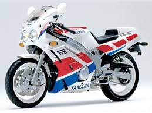

Технические характеристики - YAMAHA FZR 600 R
Расход топлива на 100км.
Трасса - 5: 50% - 6: 50%
Город: - 6
Система запуска - Стартер
Топливная система питания - Карбюратор
Тип(вид) мотора - 4рядн.
Тип мотора - 4-х тактный
Тип привода колеса - Цепь
Коробка передач - мех. 6-х ступч.
Тормоза передние - 2х дисковые
Тормоза задние - Диск
Тип задней ходовой - Моно маятник
Приборная панель - Аналоговая
Привод сцепления - Гидравлика: 50% Трос: 50%